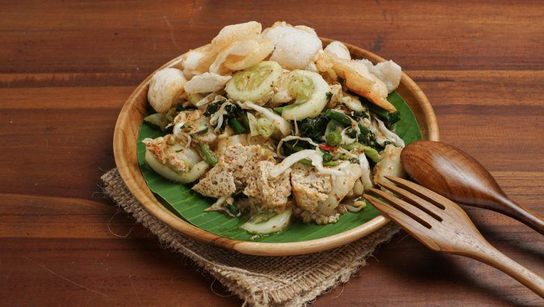

"If you're a vegan and need some fresh and healthy supper, this is your hero of the day."
A traditional dish from Sunda, made with 100% dairy free ingredients.
Perfect companion for your diet since it made mostly with steamed vegetables.".
Ingredients
Lotek
- 100g Bean sprout
- 1 Chayote,peel,and dice for about 2cm
- 100g Beanstalk
- 100g Cabbage(rough cut)
- 4 fried tofu
- 4 fried tempeh
- Some water
- Soy sauce
Peanut Sauce
- 100g Fried peanuts
- 10 Cayenne pepper
- 50g Brown sugar
- 4cm Aromatic Ginger
- 1tsp salt
- 1 clove garlic
- 1/2 tablespoon tamarine with 1 tablespoon hot water
- 200ml water
Recipe instructions
- Peanut sauce: Grind some peanuts, pepper, garlic, ginger, and brown sugar. Add water, tamarine, and salt, stir. Set aside
- Boil the vegetable alternately.Drain.Set aside
- Put all the vegetables, tofu, and tempe to a big bowl. Pour the Peanut sauce on top of it. Stir well
- Serve to the plate. Add some fried onions, or any topping you like.
Return to top
Return to main page